机器人状态
检测中
PID—
今日转发—
累计—
失败—
离线补发
单次补发上限
条/频道
待补发
0
等待检查

管理频道、接收群与转发组
| 名称 | 来源 | 频道 ID |
|---|
| 名称 | 账号 | Group OpenID |
|---|
每条消息可单独设置发送目标；未单独设置时沿用顶部默认目标。
| 名称 | 来源 |
|---|
| 名称 | 账号 | Group OpenID |
|---|
| 类型 | 名称 | 来源 |
|---|
| 名称 | 账号 | Group OpenID |
|---|
| 名称 | 来源 |
|---|
| 名称 | 账号 | Group OpenID |
|---|
| 类型 | 来源 | Steam 链接 |
|---|
| 名称 | 账号 | Group OpenID |
|---|
| 名称 | 账号 | Group OpenID |
|---|
| 名称 | 账号 | User OpenID |
|---|
加载中…
查看最近 50 条投递结果与重试状态。
| 时间 | 来源 | 消息 | 目标群 | 结果 |
|---|---|---|---|---|
| 暂无投递记录 | ||||
选择来源范围，并填写对应的 UID、标签名称或关键词
填写频道 ID（UC 开头）或 @handle
默认仅导出配置；包含运行状态时请先停止机器人再恢复，恢复可能造成重复投递或漏发。ZIP 上限为 5 MB。
尚未选择 ZIP 文件
这里显示全部已登记、可用于手动转发链接的频道。修改备注后点击保存即可。
开关批量作用于该链路的全部来源，点击后立即保存；关闭后该链路只发原文。
TMT 配置状态读取中……
密钥会写入对应环境变量，不会保存到 settings.json；留空表示保持当前密钥。在此窗口选择已保存配置并保存后即可切换模型。
设置后优先使用官方 Data API 读取频道上传；留空时使用 YouTube 官方 RSS。保存后机器人会自动重启。